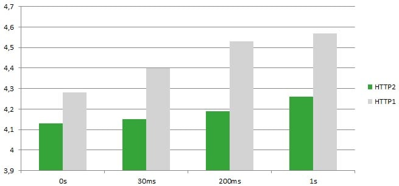

Le protocole HTTP 1.1 a été mis en place il y a 20 ans. Avec ce protocole basé sur le texte, l’inconvénient principal en termes de performance et efficience est la latence. Chaque fois qu’un élément est demandé par la page web (comme des images, une fonction JavaScript…), une connexion TCP se lance avec le serveur, avec parfois des latences, en fonction du réseau (qui se joue en fonction de nombreux paramètres, notamment la distance entre l’utilisateur et le serveur web).
Cet effet est renforcé par le fait que les navigateurs plafonnent le nombre de connexions simultanées, habituellement à un maximum de cinq. Le protocole HTTP2 – sorti en milieu d’année 2015 – présente des améliorations, notamment sur ce souci de latence. Comment cela se présente-t-il ? En diffusant et multiplexant des trames binaires plutôt que de gérer des éléments textes. Maintenant, il n’y a plus qu’une seule connexion TCP et les téléchargements se font en parallèle. Nous obtenons donc un résultat sans plus aucun overhead lié aux négociations TLS.
Il est maintenant clair que HTTP2 améliore la performance de sites et applications web. Mais qu’en est-il de l’efficience énergétique ? En effet, meilleure performance n’est pas forcément synonyme de meilleure efficacité et c’est ce que je voulais vérifier. Allez, regardons ça !
Mettre en place un serveur HTTP2 avec @Golang est relativement simple. Un démonstrateur public permet de tester la mise en œuvre et la performance. Pour faire cela, une image composée de 180 carreaux est en place et peut être vue de plusieurs manières différentes, illustrant les différents paramètres de latence :

J’ai mesuré la consommation énergétique nécessaire pour afficher cette page web sur un smartphone Nexus 6, et voici les résultats que j’ai eus :

Nous pouvons y voir que, pour les mêmes valeurs de latence (0s, 30ms, 200ms, 1s), le HTTP2 est plus efficient en termes d’énergie, avec environ 8% de consommation énergétique en moins.

Cette capture écran de GREENSPECTOR montre les différences entre HTTP1 et HTTP2 dans le cas de scenarios de latence d’une seconde. Vous noterez aussi le gain de 8.3% de déchargement de la plateforme à la seconde (Platform Discharge per second).
De plus, quand la latence augmente, HTTP2 permet l’absorption de davantage de perte de performance :
- Pour HTTP1 : 4,13 mAh à 4,26 mAh (+3%) quand la latence passe de 0s à 1s
- Pour HTTP2 : 4,28 mAh à 4,57 mAh (+6%) quand la latence passe de 0s à 1s
CONCLUSION
En conclusion, HTTP2 peut en effet améliorer l’efficacité énergétique d’un site web du côté du client. En tant que propriétaire de site internet, c’est une bonne chose que de faire ça, cela préserve la batterie de vos utilisateurs. Mais il y a encore mieux ! Vu que HTTP2 groupe les requêtes, le serveur est chargé pendant une période de temps réduite : et donc, les ressources du serveur sont libérés plus tôt et donc disponibles plus rapidement pour les autres utilisateurs.
Terminons avec une mise en garde pour ce cas d’usage : cette petite étude n’est qu’un rapide examen et non pas un cas réel, doté de différents éléments ou encore CDN. Le test est donc à poursuivre plus en profondeur. Cela dit, HTTP2 promet de belles choses en termes d’efficience énergétique.